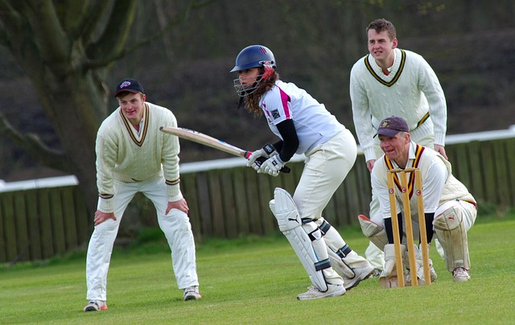

Welcome
This website provides detailed information about cricket. It is created using semantic HTML and styled with CSS, following accessibility guidelines.

About Cricket
Cricket is a bat-and-ball game played between two teams of eleven players each. The game originated in England and is now popular worldwide.
Each team has 11 players including batsmen, bowlers, and a wicketkeeper. The main objective is to score more runs than the opponent.
Formats: Test (5 days), ODI (50 overs), T20 (20 overs).
Basic Rules:
- One team bats to score runs, while the other bowls and fields.
- A run is scored when batsmen run between wickets.
- Batting continues until 10 players are out or overs complete.
- Highest run total wins the match.